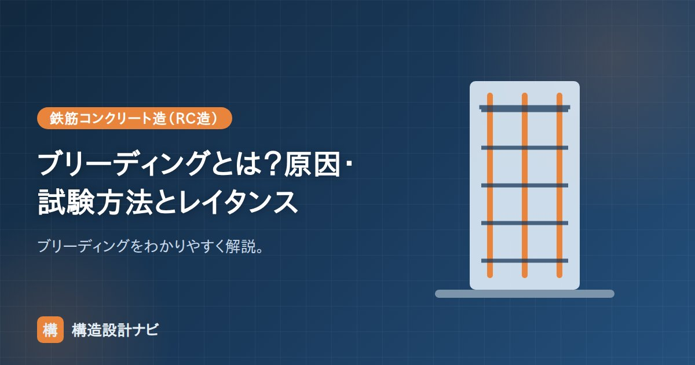

ブリーディングとは？原因・試験方法とレイタンス

ブリーディング（bleeding）とは、打ち込んだフレッシュコンクリートから、練混ぜ水の一部が分離して表面に浮き上がる現象です。材料分離の一種で、表面の強度低下や鉄筋の付着低下など品質低下の原因になります。この記事では、ブリーディングの意味と発生のメカニズム、原因と対策、JISによる試験方法、そして混同しやすい「レイタンス」との違いを整理します。
- ブリーディングは練混ぜ水が浮き上がる材料分離現象。単位水量が多いほど生じやすい。
- ブリーディング量はJIS A 1123の試験で測定する。
- レイタンスは浮いた微粒子が表面に堆積した脆弱層。打ち継ぎ前に除去する。
ブリーディングの意味と害
コンクリートを打ち込むと、重い骨材が沈み、軽い水が上に上がってきます。この水が表面に浮き出るのがブリーディングです。表面付近のコンクリートが弱くなったり、鉄筋下に水がたまって付着が低下したりします。
害はそれだけではありません。上昇する水が鉄筋や粗骨材の下面にたまると、硬化後にそこが空隙（水みち）として残り、鉄筋との付着強度の低下や水密性の低下につながります。また、沈降にともなって鉄筋の直上に沈みひび割れ（沈下ひび割れ）が生じることもあります。一方で、適度なブリーディング水は表面の急激な乾燥を防ぐ側面もあり、完全にゼロにすればよいという単純な話ではなく、「過大にしない」ことが管理の基本です。
原因と対策
- 単位水量が多い（水が分離しやすい）。
- 細骨材や粉体（セメント・混和材）が少なく、水を保持できない。
- 過度の振動・打込み速度。
対策は、単位水量を抑える、AE剤や混和材で保水性を高めるなどです。粉末度の高いセメントや高炉スラグ微粉末・フライアッシュなどの粉体を増やすと保水性が上がり、ブリーディングは減少します。柱や壁など背の高い部材では1回の打込み高さを抑え、締固めをやり過ぎないことも有効です。
試験方法（JIS A 1123）
ブリーディングはJIS A 1123（ブリーディング試験）で測ります。容器にコンクリートを詰め、表面に浮き出た水を一定時間ごとに吸い取って量を測り、ブリーディング量（cm³/cm²）・ブリーディング率で評価します。ブリーディングは打込み直後から始まり、時間の経過とともに徐々に収まっていくため、試験でも浮き出る水がなくなるまで継続して測定します。
レイタンスとの違い
レイタンスは、ブリーディング水とともに浮き上がった微細な粒子（セメントや細骨材の微粉）が、表面に薄く堆積してできる脆弱な層です。つまり「ブリーディング＝水の浮き」、「レイタンス＝その結果表面にできる弱い膜」という関係です。レイタンスは強度がなく付着を妨げるため、打ち継ぎの前に取り除く必要があります。
打ち継ぎ面のレイタンス処理は「白い膜が取れていればOK」と目視だけで済まされがちですが、私は高圧洗浄後にワイヤーブラシで擦り、骨材の頭が軽く見える程度まで落ちているかを手で触って確かめるようにしています。見た目がきれいでも脆弱層が残っていることは珍しくありません。
ブリーディングとレイタンス（図解）
原因と対策
| 原因 | 対策 |
|---|---|
| 単位水量が多い | 減水剤を使い、水を減らす |
| 細骨材が少ない・粗い | 細骨材率を上げる、粒度を調整する |
| セメントの粉末度が低い | 粉末度の高いセメント、混和材（フライアッシュ等）の使用 |
| 空気量が少ない | AE剤で適切な空気量を確保する |
| 打込み速度が速い・1層が厚い | 打込み速度を抑える、層を薄くする |
| 過度の締固め | 加振時間を適切に（表面にペーストが浮いたら止める） |
レイタンスは、ブリーディング水とともに浮き上がった微細な粒子が表面に堆積した、強度のない脆弱な層です。この上に次のコンクリートを打つと一体化しないため、打継ぎ面では必ず除去します。方法は、硬化前ならブラシや高圧水で洗い流し、硬化後ならワイヤブラシやウォータージェットではつり取ります。ブリーディングとレイタンスは原因と結果の関係にあり、セットで理解しておく必要があります。
よくある質問
Q1. ブリーディングはまったくないほうがよいのですか？
適度なブリーディングは有害ではありません。表面に浮いた水が急激な乾燥を防ぐ働きをする面もあるためです。問題なのは過大なブリーディングで、表面の品質低下、鉄筋との付着低下、沈みひび割れを招きます。逆にブリーディングがほとんどない高流動コンクリートなどでは、表面が急乾燥しやすく、打込み直後からの養生がより重要になります。
Q2. 沈みひび割れとは何ですか？
ブリーディングに伴う骨材の沈降が、鉄筋などに妨げられることで生じるひび割れです。鉄筋の直上でコンクリートが沈めず、その両脇が沈むため、鉄筋に沿って線状のひび割れが表面に現れます。打込み後30分〜数時間で発生します。対策としては、単位水量の低減のほか、ひび割れ発生後にタンピング（再振動締固め）を行って埋める方法があります。
Q3. ブリーディング試験はどのように行いますか？
JIS A 1123に規定された方法で行います。容器にコンクリートを詰め、一定時間ごとに表面にたまった水をスポイトで採取して量を測定し、ブリーディング量（cm³/cm²）とブリーディング率（%）を求めます。試験は主に配合設計の段階で実施され、現場での日常的な品質管理項目には含まれませんが、水密性が重要な構造物では確認されることがあります。
まとめ
- ブリーディングは練混ぜ水が表面に浮き上がる材料分離現象。表面の弱化・付着低下・沈みひび割れを招く。
- 原因は単位水量過多・粉体不足・過度の締固めなど。単位水量の低減と保水性の確保が対策。
- 試験はJIS A 1123。ブリーディング量・ブリーディング率で評価する。
- レイタンスは浮いた微粒子の脆弱な層。打ち継ぎ前に除去する。